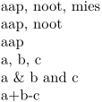
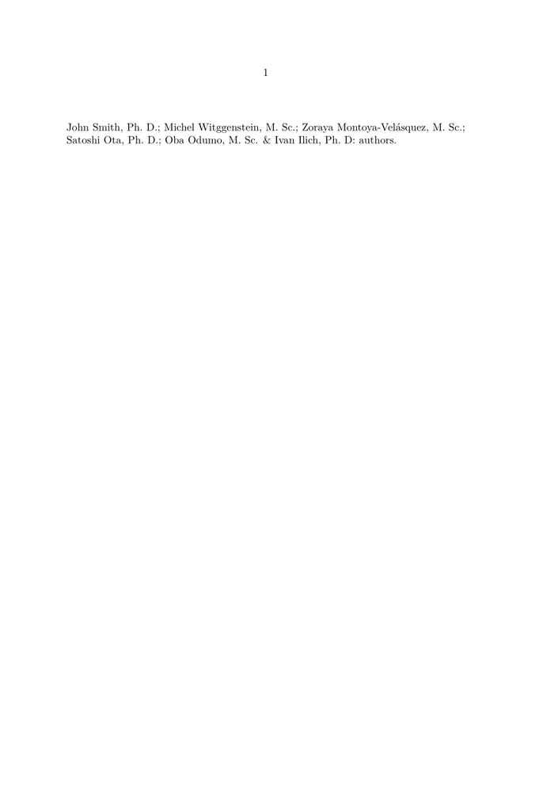

Contents
Summary
The command \commalistsentence is used to present a comma separated list of values (like an author list, for example), with the option of changing the separator of the items and have a distinct separator for the last item of the list.
Settings
| \commalistsentence[...,...][...,...] | |
| [...,...] | text |
| [...,...] | text |
| Option | Explanation |
|---|---|
| A comma separated list of items. Use {} to group items that contain commas, spaces or other special characters. | |
| text | a,b,c,d,e,{f, g, h},i,j |
| An array with two (2) items, describing the separator for each item, and the separator between the last element and the one preceding it. This item is optional. | |
| text | [{ \& },{ and }] % result: a & b & c & d & e & f, g, h & i and j |
Description
This is an useful command for creating lists where you want to output the last item in a different way than the rest, for example, on a list of authors, or publishers.
Examples
Some simple lists
-
\commalistsentence[aap,noot,mies] \commalistsentence[aap,noot] \commalistsentence[aap] \commalistsentence[a,b,c] \commalistsentence[a,b,c][{ \& },{ and }] \commalistsentence[a,b,c][+,-]
Result:
- 
A list of authors
-
\def\Authors{% {John Smith, Ph.~D.}, {Michel Witggenstein, M.~Sc.}, {Zoraya Montoya-Velásquez, M.~Sc.}, {Satoshi Ota, Ph.~D.}, {Oba Odumo, M.~Sc.}, {Ivan Ilich, Ph.~D}% } \starttext \commalistsentence[\Authors][{;\space},{\space\letterampersand\space}]: authors. \stoptext
Result:
- 